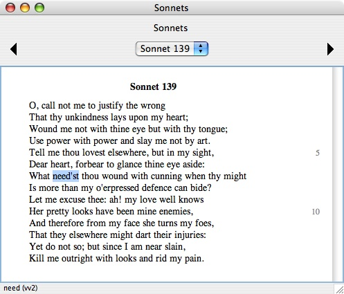
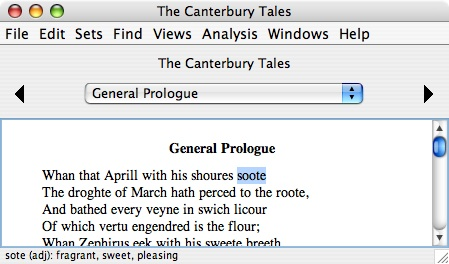
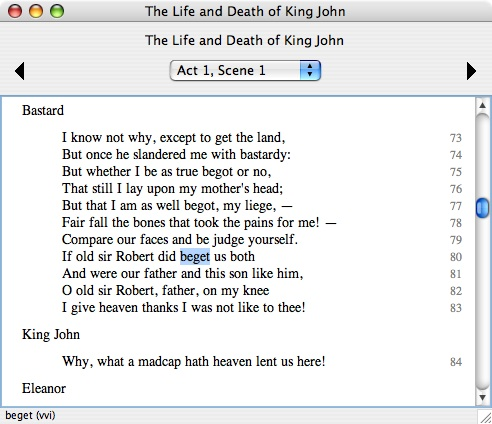
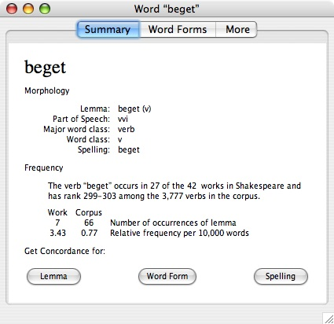
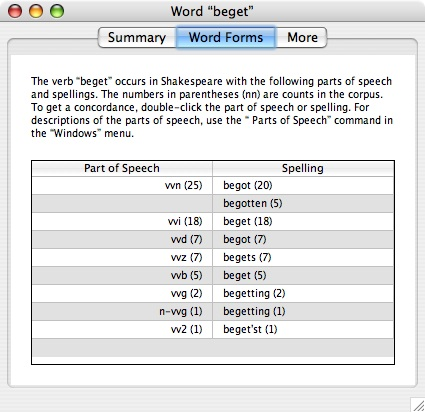
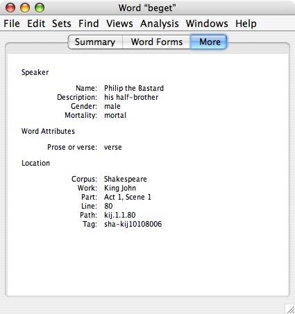
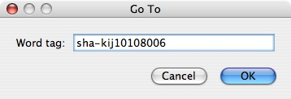

|
|
|
To get a brief summary of a word's morphology, double-click it to select it. The summary is displayed in the footer area of the work display window, at the very bottom.

In this example, we have selected the word "need'st" in a Shakespeare sonnet. In the footer, we see that this word is an instance of the lemma "need," with part of speech "vv2" (verb, 2nd person singular, present tense).
In the Chaucer corpus, the footer info displays Professor Larry Benson's lemma, part of speech, and definition for the word. For example:

In this example, we see that the selected word "soote" is an adjective meaning "fragrant, sweet, pleasing."
You can display the same brief descriptions as tool tips. Hold down the Control key while you move the mouse over the word and pause. After a brief delay, the description appears as a tool tip immediately beneath the word.
To get full information for a word, select it and then press Return or use the "Get Info" command in the "File" menu (Command-I). In the following example, we first select the word "beget" in a speech from The Life and Death of King John.

We now press Return or use the "Get Info" command to display the full information window for the word:

The "Summary" tab of the Get Info window shows all of the available morphology information for the word, basic frequency information for the word, and presents three buttons that you can click to find similar words.
In each case, the search results are displayed in a new concordance window. See the chapter on Concordances for details on this window.
The "Word Forms" tab of the Get Info window presents a table showing all of the different parts of speech and spellings of the lemma that are used in the corpus, with frequency counts. The table is sorted in decreasing order by frequency.

To find all the other words in the corpus which have the same lemma and a specific part of speech, double-click the part of speech name in the left column of the table. To find all the other words in the corpus which have the same lemma and a specific part of speech with a specific spelling, double-click the spelling in the right column of the table.
The "More" tab of the Get Info window presents all available additional tagging data for the word and details on the location of the word.

Note the "path" in this example, kij.1.1.80. Paths are used as a conventional shorthand notation for the locations of lines. In this example, the path kij.1.1.80 means King John, Act 1, Scene 1, Line 80. Paths like this one are also used in concordance windows.
Also note the "tag" in this example, sha-kij10108006. Every word has a unique tag. Tags can be useful when you want to communicate the precise location of a word with no chance of confusion or ambiguity.
For example, suppose you want to have a discussion about this word in our example with a colleague. You could send him an email message with your thoughts about the word and include the tag sha-kij10108006 in your message. When your colleague receives your message, he can run WordHoard and use the "Go To Word" command in the "Find" menu (Command-G) to go directly to this word of interest.

A useful trick in this example would be to copy the tag from the email message and paste it directly into the "Go To" dialog shown above.
|
|
|